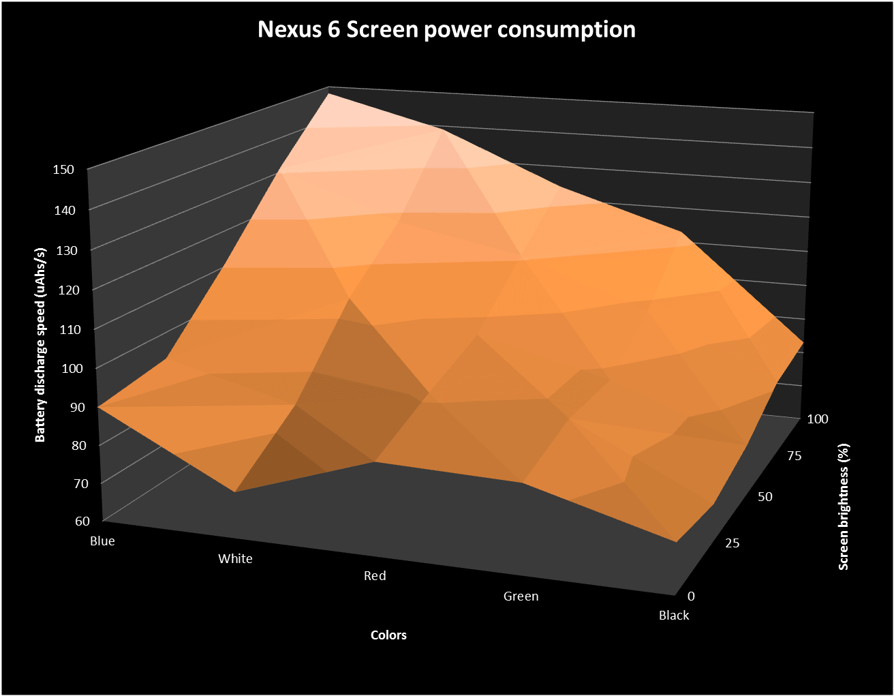
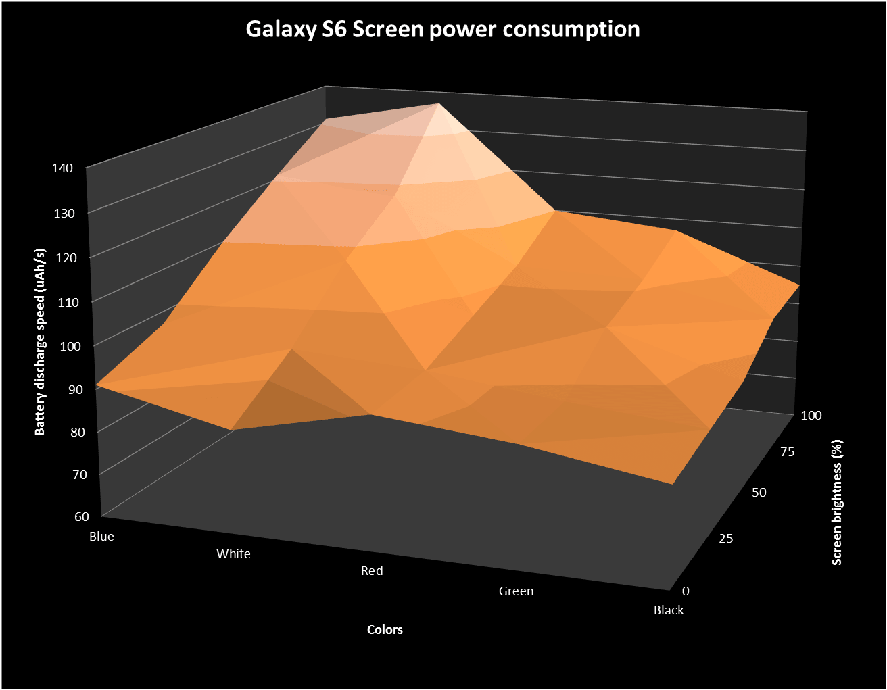
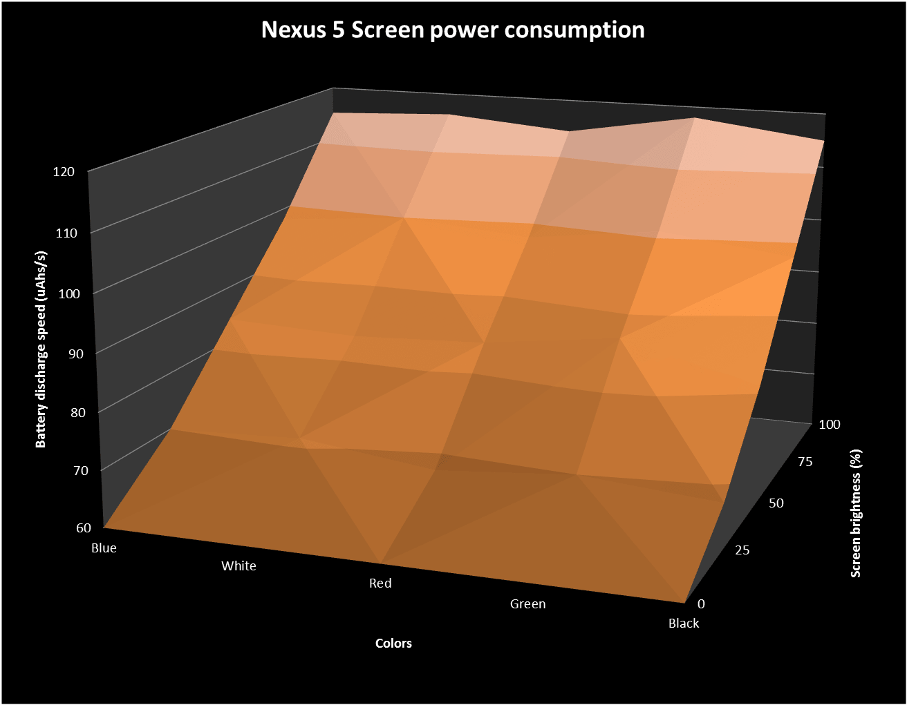
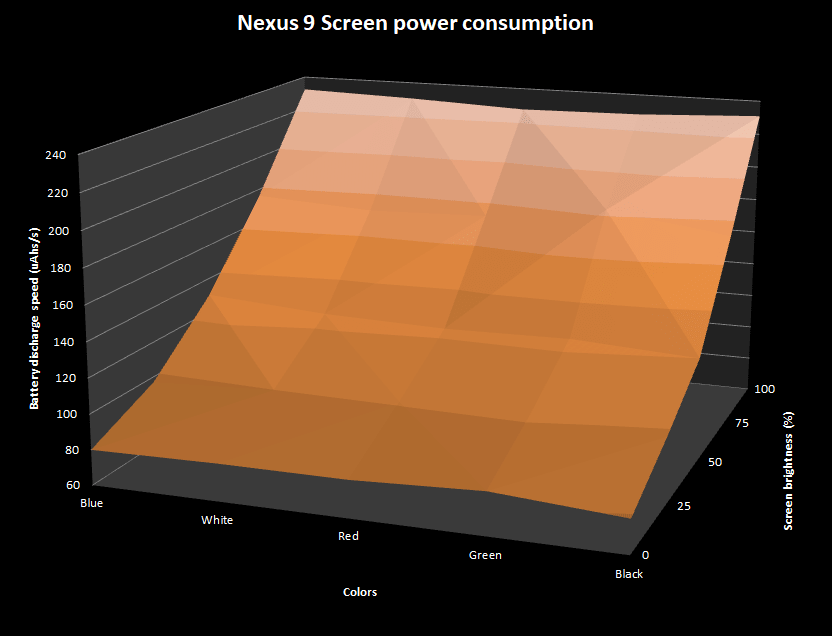
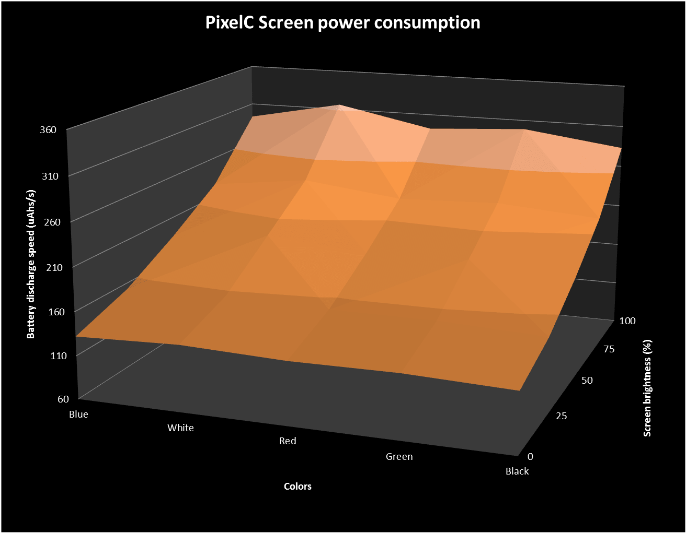
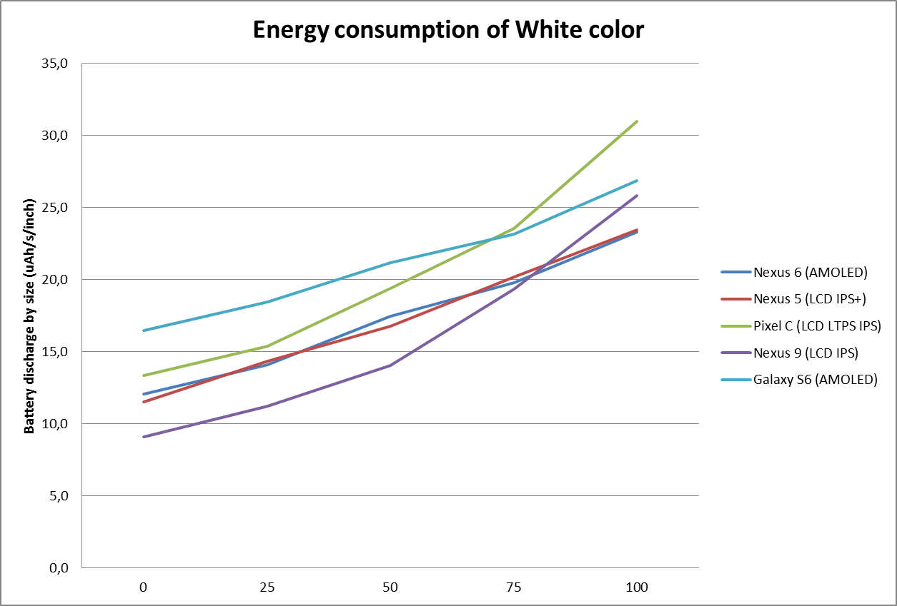
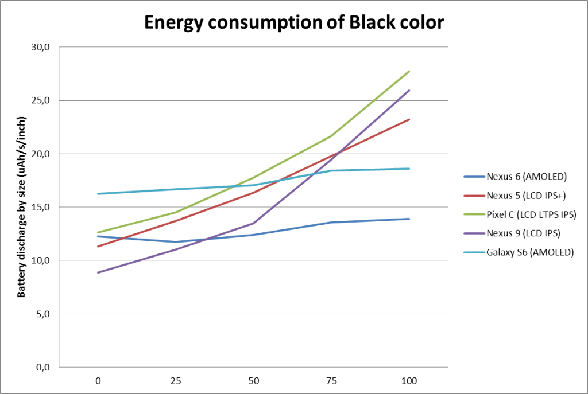

L’influence des couleurs sur la consommation d’énergie des smartphones ou des tablettes est un débat récurrent. On entend beaucoup d’affirmations péremptoires (du type «choisis un fond noir pour consommer moins») qui bien souvent ne tiennent pas compte des technologies sous-jacentes – pourtant très diverses – ou d’études précises sur le sujet. Alors comme d’habitude, en tant qu’obsédé des mesures d’énergie sur appareils mobiles, j’ai voulu en savoir plus.
Pourquoi cette étude ?
La réduction des consommations d’énergie des appareils mobiles est un leitmotiv pour tous les constructeurs. En effet,l’autonomie est un des critères de choix principaux avant l’achat d’un appareil. Les fabricants travaillent donc à optimiser tous les composants: amélioration de l’efficience des processeurs, technologies de senseurs moins consommatrices, augmentation de la capacité des batteries… Lorsque j’ai mis au point la méthodologie de mesure de consommation d’énergie des logiciels chez GREENSPECTOR, j’ai été amené à étudier tous les paramètres qui peuvent influencer cette consommation. Oui, les écrans en font partie, mais il me semblait intéressant de creuser un peu ce sujet. Allons-y.
Méthode de test
Pour mesurer les comportements énergétiques des écrans, je crée une petite batterie de tests qui fait varier la luminosité de l’écran par paliers (0%, 25%, 50%, 75% et 100%) et d’afficher une page complète d’une certaine couleur (Rouge, Vert, Bleu, Noir, Blanc). Puis j’exécute les tests sur les divers appareils dont nous disposons dans notre Power Test Cloud. Les consommations d’énergie (et d’autres ressources) sont mesurées par les sondes GREENSPECTOR qui sont installées sur ces appareils. Puis je récupère les résultats des mesures, et je trace des jolis graphes pour les interpréter plus facilement.
Premières mesures sur Nexus 6
Je commence par mon appareil favori, le Motorola Nexus 6 dont l’écran utilise la technologie AMOLED. On obtient la cartographie suivante des consommations suivantes : en abscisse les différentes couleurs affichées, dans la profondeur les variations de luminosité, et sur l’axe vertical, on retrouve la consommation de batterie qui en résulte :

Premières conclusions
- La consommation est plus faible pour le noir. Je suis content, car cela confirme d’autres études telle que celle-ci ou celle-là, et cela correspond aussi à ce que nous attendons théoriquement de la technologie AMOLED.
- La différence de consommation entre les couleurs est plus faible quand la luminosité est basse. Cela semble intuitif, mais la mesure permet de le confirmer.
- La consommation est croissante dans l’ordre suivant : Noir < Vert < Rouge < Blanc < Bleu
- Les différences peuvent être significatives : à luminosité maximale, le bleu consomme 78% d’énergie de plus que le noir (donc un écran bleu avec une luminosité à 100 % videra la batterie en 5h30, alors qu’un écran noir avec la même luminosité videra la batterie en 12h !).
Quelques explications
Le Nexus 6 se base sur une technologie AMOLED : Matrice Active LED ou de l’anglais Active-Matrix Organic Light-Emitting Diode. C’est une technologie qui lie la technologie OLED (diode électroluminescente organique) et celle des matrices actives (commande de chaque pixel indépendamment). C’est une alternative à la technologie historique des LCD (écrans à Cristaux Liquides).
Le noir est facile à réaliser pour les écrans AMOLED car il faut juste éteindre des pixels. C’est pourquoi le noir consomme moins. Le blanc est une composition du bleu, rouge et vert, on le retrouve donc dans la moyenne des couleurs.
Mesure sur Samsung Galaxy S6
Afin de confirmer ce comportement énergétique, je mesure celui du Galaxy S6 qui exploite une technologie dérivée, baptisée Super AMOLED:

On observe le même comportement avec une légère différence : cette fois c’est le blanc qui consomme le plus (44% de plus que le noir) en devançant légèrement le bleu. Globalement les constats sont les mêmes : le noir est beaucoup moins consommateur, et le blanc et le bleu consomment plus que les autres couleurs.
Mesure sur Nexus 5
Pour les AMOLED, c’est clair. Mais qu’en est-il pour les autres technologies ? Prenons par exemple le Nexus 5 qui est sur une technologie LCD IPS+:

On voit clairement qu’avec un écran LCD IPS+, la couleur ne joue pas sur la consommation. On peut juste noter qu’à la luminosité maximale, le blanc sera très légèrement plus consommateur (4% d’écart soit 10 à 15 mn de différence sur l’autonomie théorique).
La technologie IPS (In-Plane Switching) est une technologie LCD. IPS+ ajoute des LED pour améliorer l’affichage. Sur les écrans LCD la théorie veut que la consommation soit indépendante de la couleur : tout est bon donc ! Au passage, notons que la technologie Retina des écrans Apple reposait jusqu’à présent sur une technologie IPS, mais il semble que cela va changer avec le nouvel iPhone 8S basé sur un écran OLED : designers d’apps iOS, prenez-en note.
Mesure sur Nexus 9
La mesure sur une tablette Nexus 9, elle aussi basée sur une technologie IPS donne les résultats suivants :

Les constats sont les mêmes que le Nexus 5, avec un écart de 2% à peine entre les couleurs.
Mesure sur Pixel C
En effectuant les mesures sur la tablette Google PixelC, modèle récent en technologie toujours LCD mais dans sa variante LTPS , on obtient ceci :

Il y a toujours une indépendance globale de la consommation de batterie vis-à-vis de la couleur. Cependant une couleur se détache légèrement: l’impact du blanc à luminosité maximale est 12% plus fort que celui du noir (soit 9h d’autonomie en noir contre 8h en blanc).
Le LCD LTPS (Low Temperature Poly-Silicon) est en fait une technologie Thin Film Transistor (TFT) avec une technologie à matrice active (comme les AMOLED). La différence sur les blancs provient probablement de la possibilité d’activer ou non les pixels.
Comparaison pour l’utilisateur
Maintenant que nous avons fait ces quelques tests, essayons de comparer ces différents modèles entre eux. Pour cela, prenons la consommation causée par l’affichage d’un écran blanc ou noir, divisée par la taille de l’écran. Pour exprimer la notion de taille, nous ne prenons pas sa surface (ce qui serait scientifiquement plus exact) mais simplement sa diagonale exprimée en pouces, car c’est la seule information dont dispose l’utilisateur : c’est donc celle-là qui lui importe lorsqu’il doit faire un choix :

Basé sur une technologie AMOLED, le Galaxy S6 a une consommation assez élevée. Idem pour le Pixel C avec sa technologie LTPS IPS (avec une augmentation exponentielle de la consommation quand la luminosité augmente). Dans les blancs, aucune technologie ne sort du lot en fait. Cette analyse est cependant à considérer avec précaution car nous n’avons pas mesuré beaucoup d’appareils.

En observant le comportement du noir, on retrouve l’intérêt de la technologie AMOLED dont la consommation est constante. Cependant à luminosité minimale (0 %), la consommation est plus importante que pour les autres technologies. Sur la plage 25% – 50% il n’y a pas de différence ; et l’avantage est clair pour des luminosités fortes où l’AMOLED tire son épingle du jeu.
Conclusion
Voici venu le moment de délivrer notre verdict. Faut-il choisir un fond d’écran noir pour son smartphone ou sa tablette ?
Utilisateurs
Si vous avez un écran AMOLED : oui ! Sans hésiter, choisissez pour votre fond d’écran une image avec une couleur prédominante noire. (Pour savoir quel type d’écran vous avez-, , regardez les spécifications sur le site du constructeur ou sur des sites dédiés). Si votre appareil est basé sur une technologie différente, vous pouvez toujours appliquer cette bonne pratique, cependant les gains d’autonomie seront moindres.
Dans la même logique, préférez les applications avec des interfaces ou des skins noirs (comme Google Black par exemple, ou le « mode nuit » de Twitter…). Et si votre application préférée ne propose pas de version « sombre », demandez-la à l’éditeur….
Pour tous : configurez la luminosité au minimum nécessaire pour assurer un bon confort d’utilisation. A 25% les technologies actuelles permettent souvent d’avoir un bon rendu. Évitez le 100% permanent – c’est une valeur que je réserve pour l’extérieur les jours ensoleillés. Si vous en disposez sur votre appareil, activez l’adaptation automatique de la luminosité… Mais vérifez cependant qu’elle n’est pas trop lumineuse, dans ce cas une configuration manuelle pourrait être plus efficiente.
Professionnels avec une flotte d’entreprise
Comme l’usage, les paramètres et les designs d’écran sont maîtrisés, il est possible de choisir le smartphone le plus adapté à l’usage. Ne vous fiez pas uniquement aux données constructeurs, vous pouvez effectuer des tests adaptés qui vous donneront une idée plus claire de l’autonomie réelle. Spécifiez des interfaces adaptées à vos téléphones. Si vous avez une flotte avec écrans AMOLED, il est important pour l’autonomie de vos appareils d’avoir des interfaces plutôt sombres que claires.
Designers
Le choix des couleurs dépend principalement de la charte graphique et de la marque mais la consommation d’énergie peut être un critère supplémentaire qui rendra votre design plus efficient. Il est intéressant de spécifier idéalement deux thèmes : un sombre et un gris. Cela permettra à l’utilisateur de choisir le thème le plus adapté à son appareil.
Développeurs
Afin d’adapter le design au contexte matériel, il est intéressant d’offrir à l’utilisateur le choix d’un thème plus sombre. Il faudra donc implémenter une option de modification de l’écran (facile avec des CMS, plus compliqué avec un framework).